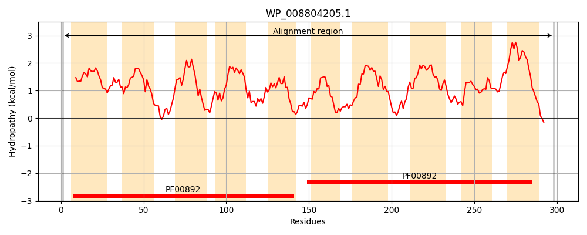
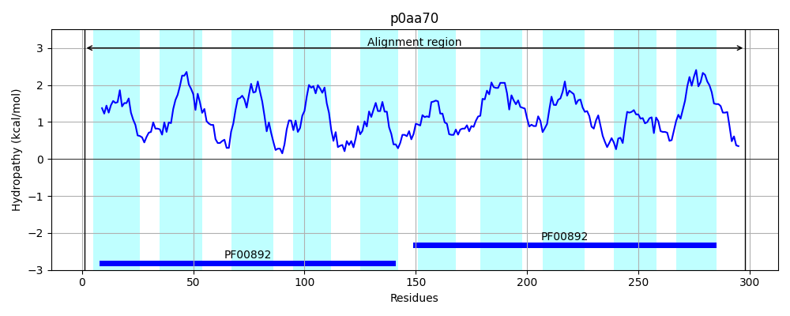
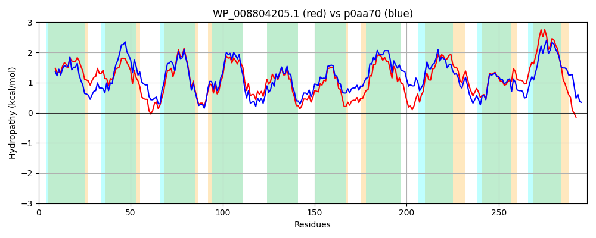

Hit Accession: p0aa70
Hit TCID: 2.A.7.3.22
Hit Description: gnl|BL_ORD_ID|8646 gnl|TC-DB|p0aa70|2.A.7.3.22 Uncharacterized inner membrane transporter yedA OS=Escherichia coli (strain K12) GN=yedA PE=1 SV=1
Mach Len: 298
e:0.000000
Query TMS Count : 10
Hit TMS Count: 10
TMS-Overlap Score: 9.000000
Predicted Substrates:CHEBI:6829;methionine, CHEBI:2642;alpha-amino acid
BLAST Alignment:
Score: 1236 , Bit scores: 480 bits, E-value: 4.8e-173, Alignment length: 298, Percentage identity: 80
Query: 1 MSTRQLLPLIGALFALYIIWGSTYFAIAVGVASWPPLMMAGIRFLSAGVLLLGWLLATGHKLPARRPLLNAALIGVLLLAVGNGFVTLAEHQHVPSGIAAVMVATVPLFTLCFSRFFGIATRKLEWLGIAIGLAGIVMLNSGGNLNGNPWGALLILIGSLSWAFGSVYGSRIELPTGMMAGAIEMLAAGIVLLVSSWLTGETLTHVPSWSGIAALAYLAIFGSLIAINAYMFLIRNVTPAVATSYAYVNPVVAVLLGTGFGGESLSLIEWLALAVIIFAVVLVTLGKYLFPARSEATP 298
M RQLLPL GALFALYIIWGSTYF I +GV SWPPLMMAG+RFL+AG+LLL +LL GHKLP RPLLNAALIG+LLLAVGNG VT+AEHQ+VPSGIAAV+VATVPLFTLCFSR FGI TRKLEW+GIAIGLAGI+MLNSGGNL+GNPWGA+LILIGS+SWAFGSVYGSRI LP GMMAGAIEMLAAG+VL+++S + GE LT +PS SG A+ YLA+FGS+IAINAYM+LIRNV+PA+ATSYAYVNPVVAVLLGTG GGE+LS IEWLAL VI+FAVVLVTLGKYLFPA+ P
Sbjct: 1 MRFRQLLPLFGALFALYIIWGSTYFVIRIGVESWPPLMMAGVRFLAAGILLLAFLLLRGHKLPPLRPLLNAALIGLLLLAVGNGMVTVAEHQNVPSGIAAVVVATVPLFTLCFSRLFGIKTRKLEWVGIAIGLAGIIMLNSGGNLSGNPWGAILILIGSISWAFGSVYGSRITLPVGMMAGAIEMLAAGVVLMIASMIAGEKLTALPSLSGFLAVGYLALFGSIIAINAYMYLIRNVSPALATSYAYVNPVVAVLLGTGLGGETLSKIEWLALGVIVFAVVLVTLGKYLFPAKPVVAP 298 | Protein Hydropathy Plots: |
|---|
|  |  |
Pairwise Alignment-Hydropathy Plot:
|
|---|
|  |